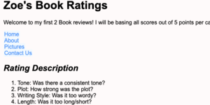

Assignment 1: Basic HTML
In this project we made a website! We discovered how to add links to internal sections of the website, and
to other pages outside of the website completely. We also learned how to change
aspects about the websites colors and image resizing.
Assignment 2: Basic CSS

In this project we learned more about how to make the pages prettier. Adding different color backgrounds,
text, or adding borders. One thing in particular we learned was how to utilize padding, and changing margins.
Assignment 3: Page Layout
For this Assignment we figured out how to change various aspects of the website to make it
more professional looking, and easier to read the information. This assignment taught us
how to change the view of the website depending on the size of the screen.
Assignment 5: Recreate CSS Page

For this Assignment we copied a page from USC's website. We recreated this page down to every aspect
of it to practice being able to understand how to make CSS pages.
Assignment 7: JavaScript, Buttons, Functions, and more.

For this Assignment we copied a page layout that was given to us and we learned how to add animation and use sliders!
We also practiced new skills such as changing an image when clicking on it, and hiding images until clicked on
in certain areas.